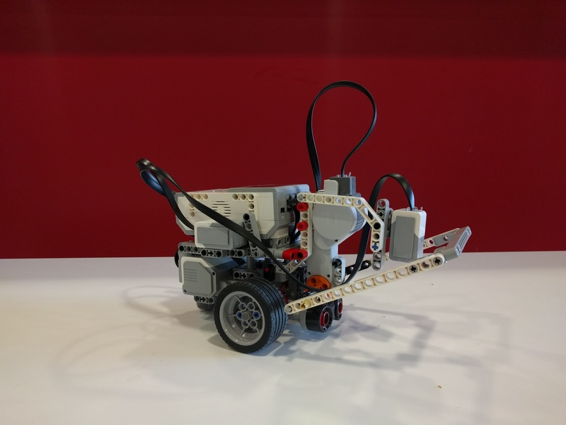

Bienvenue! Witam! Benvenuto!
Bonjour!
My name is Napoleon and I was created to be a winner. The history of my name is quite interesting but you have to ask my owners about it. I was born in November 2016 in EURECOM so I am a Newbie in relay race. But I am equipped with great engines so I can go really fast! You will see!
I have ears (ultrasound sonar) not to bang into big boxes which will be on my way. I have eyes (colour sensor) and two hands (engine) to to grab small red ball. I also have a gyro in my tummy to not get lost.
I am very friendly robot so thanks to my Bluetooth I can communicate with my robot friends.
You can see on my pictures how fancy I am :) {kind=link}
Architecture of the robot
TODO: more technicalAlgorithms
- Position tracking
To track the position of the robot we used Gyro Enhanced Odometry approach.- Using the encoders obtaine wheel displacement of the robot.
- Using gyroscope obtain relative rotation since the last check.
- Using trygonometry properties calculate X and Y differences.
- Update robot position by integrating obtained results.
- Repeat the algorithm every 100ms.
Implemented algorithm: position.c
- Navigation and movement
To navigate over the arena we implemented go_to_XY(X, Y) function. This function is using the information from our position tracking thread to calculate required rotation towards the target and distance. After the calculations are completed, the movement plan is executed and corrected as new position data becomes available.Combining our position tracking and navigation functions we can execute the plan for the entire race using very simple high-level commands.
Following example demonstarte our movement plan for follower for the small arena: - Ball management and ball detection
For the ball management we used simple approach as presented on the picture below:
TODO: PICTURETo find the ball we implemented find_ball() function. This function is using the data provided by eye.c thread. The eye when initialized is gathering the information from the colour sensor and ultra sound sensor and then can feed find_ball() function with information about the nearst ball or obstacle.
Source code
TODO: Source code is no TOP SECRET but later on, it can be accessed on GitHub repository that is now private. All instructions on how to use that source code: how to compile it, how to download it on the robot, and how to start the robot will be available there.
Authors
Emilia Cebrat (@EmilyTheStrange), Kamil Maslowski (@kmaslows), and Christian Palmiero (@ChristianPalmiero)